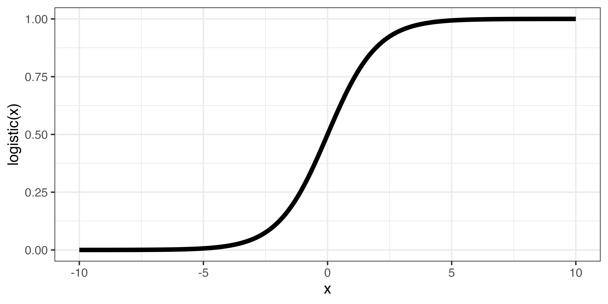
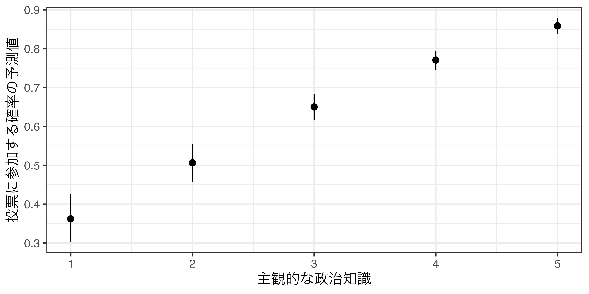
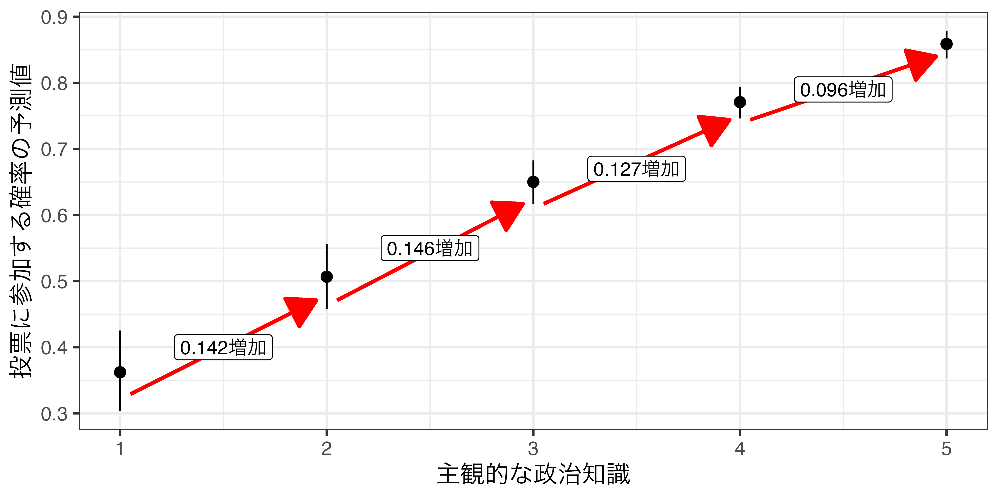
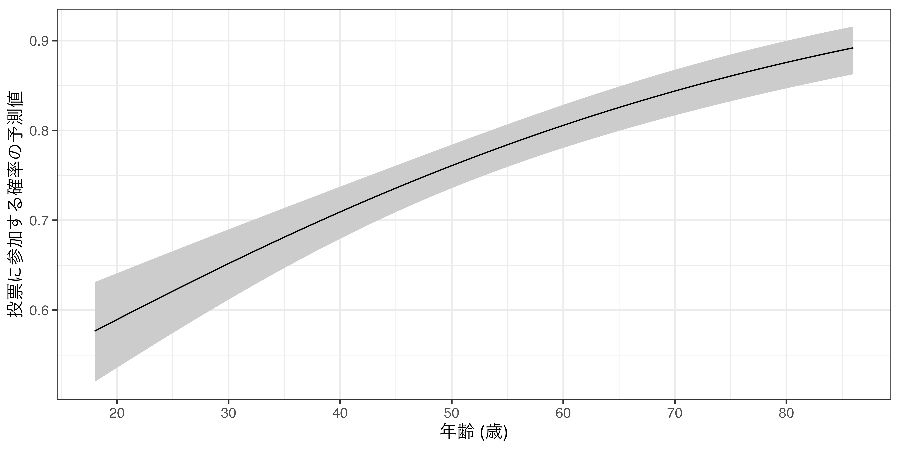

マクロ政治データ分析実習
10/ ロジスティック回帰分析
関西大学総合情報学部
授業開始前に
すぐに実習できるように準備しておきましょう。
- JDCat分析ツールを起動しておいてください。
- 本日授業用のプロジェクトを作成するか、既存のプロジェクトを開いてください。
- LMSから実習用データをダウンロードしておいてください。
- ダウンロードしてデータをプロジェクト・フォルダーにアップロードしてください。
- プロジェクト・フォルダー内に
Dataフォルダーを作成し、そこにアップロードしましょう。
- プロジェクト・フォルダー内に
- 実習用コードを入力するスクリプト、またはQuarto（or R Markdown）ファイルを開き、以下のコードを入力&実行してください（コピペ可）。
- トラブルが生じた場合、速やかにTAを読んでください。
- 時間に余裕があれば、スライド内のコードも書いておきましょう。
ロジスティック関数
実習用データ
# A tibble: 2,555 × 6
Voted Female Age Educ Knowledge Ideology
<dbl> <dbl> <dbl> <dbl> <dbl> <dbl>
1 0 1 44 3 3 5
2 0 0 57 3 4 8
3 0 1 28 2 3 4
4 0 0 50 4 1 3
5 0 1 23 2 5 7
6 0 1 32 4 1 5
7 1 0 38 4 5 10
8 1 0 23 4 4 7
9 1 0 47 4 5 5
10 1 0 48 2 5 6
# ℹ 2,545 more rows| 変数名 | 説明 |
|---|---|
| Voted | 2019参院選の投票参加 (0:棄権 / 1:投票) |
| Female | 女性ダミー (0: 男性 / 1: 女性) |
| Age | 回答者の年齢 |
| Educ | 回答者の学歴(1: 中卒以下; 2: 高卒; 3: 短大卒; 4: 大卒以上) |
| Knowledge | 回答者の主観的な政治知識 (高いほど知識あり) |
| Ideology | 回答者のイデオロギー(0:革新〜5:中道〜10:保守) |
問題設定
有権者の投票参加を規定する要因を調べたい。投票所に足を運ぶには予め投票先を決めておく必要があろう。しかし、数多い選択肢（候補者、政党）の中から自分の望みを実現してくれそうな選択肢を見つけることは簡単な作業ではない。政治に関する知識があれば、比較的簡単に見つかるため、投票参加しやすいと考えられる。一方、そうでない有権者は自分にとっても最適な選択肢を見つけることを諦め、棄権するだろう。これは本当だろうか。
- 応答変数：投票参加（
Voted）- 「投票（= 1）」と「棄権（= 0）」の値のみを取るダミー変数（= 二値変数、バイナリー変数）
- 説明変数として0/1の値を取る変数は「ダミー変数」と呼ぶが、応答変数として使われる場合も「バイナリー変数」、または「二値変数」の方がより一般的
- 主な説明変数：回答者の主観的な政治知識（
Knowledge） - 統制変数：性別（
Female）、年齢（Age）、学歴（Educ）、イデオロギー（Ideology）
モデル
記述統計
Descriptive Statistics
df
N: 2555
Mean Std.Dev Min Max N.Valid
--------------- ------- --------- ------- ------- ---------
Voted 0.71 0.45 0.00 1.00 2555.00
Female 0.46 0.50 0.00 1.00 2555.00
Age 50.91 15.69 18.00 86.00 2555.00
Educ 3.21 0.90 1.00 4.00 2555.00
Knowledge 3.95 1.12 1.00 5.00 2555.00
Ideology 5.40 2.16 0.00 10.00 2555.00線形確率モデル
バイナリー変数を応答変数とする線形回帰モデル：線形確率モデル (linear probability model；LPM)
| 係数 | 標準誤差 | 検定統計量 | p値 | |
|---|---|---|---|---|
| 切片 | −0.109 | 0.056 | −1.959 | 0.050 |
| 主観的な政治知識 | 0.119 | 0.008 | 15.359 | < 0.001 |
| 女性ダミー | −0.055 | 0.017 | −3.213 | 0.001 |
| 年齢 | 0.005 | 0.001 | 8.408 | < 0.001 |
| 学歴 | 0.036 | 0.010 | 3.714 | < 0.001 |
| イデオロギー | 0.004 | 0.004 | 1.054 | 0.292 |
- 政治知識の係数は約0.119
- 政治知識が1上がると、投票に参加する確率は約11.9%p上がる。
- 分かりやすい解釈であるものの、一つ、深刻な問題がある。
- たとえば?
線形確率モデルの限界
主観的政治知識が5、男性、86歳、教育水準が4、イデオロギーが10の回答者がいる場合、投票に参加する確率の予測値は?
# -0.1093644 + 0.1186971 * 5 - 0.0549171 * 0 + 0.0046902 * 86 + 0.0357970 * 4 + 0.0040744 * 10
lm_fit |>
predictions(newdata = datagrid(Knowledge = 5,
Female = 0,
Age = 86,
Educ = 4,
Ideology = 10))
Knowledge Female Age Educ Ideology Estimate Std. Error z Pr(>|z|) S 2.5 % 97.5 %
5 0 86 4 10 1.07 0.0306 35 <0.001 887.0 1.01 1.13
Type: response - 投票参加確率の予測値は1.07141 \(\rightarrow\) 107.141%
- 確率は0以上、1以下（0%〜100%）であるものの、あり得ない予測値が出る。
- 他にも線形確率モデルにはいくつかの問題がある（分散の不均一性など）。
- 参考) 応答変数がバイナリー変数であっても、線形確率モデルが推奨される場合もある。
- Freedman, David A.. 2008. “Randomization Does Not Justify Logistic Regression,” Statistical Science, 23 (2): 237-249.
ロジスティック関数
\[ \mbox{logistic}(x) = \frac{1}{1 + e^{-x}} \]
- \(e\)はネイピア数：\(e = 1 + 1 + \frac{1}{2!} + \frac{1}{3!} + \frac{1}{4!} + ... \frac{1}{\infty!}\) = 2.71828184590…
- \(x\)は\(-\infty \sim \infty\)の値を取り得る。
- \(x\)が\(-\infty\)の場合、\(e^{-x}\)は\(e^{-(-\infty)} = \infty\)、\(x\)が\(\infty\)の場合、\(e^{-x}\)は\(e^{-(\infty)} = 0\)
- \(\rightarrow\) \(e^{-x}\) は\(0 \sim \infty\)
- \(e^{-x}\)は\(0 \sim \infty\)の値をとる。
- \(e^{-x}\)が0の場合、\(\mbox{logistic}(x)\)は1、\(e^{-x}\)が\(\infty\)の場合、\(\mbox{logistic}(x)\)は0
- \(\rightarrow\) \(\mbox{logistic}(x)\)は0以上、1以下
- \(\rightarrow\) \(x\)の値が大きいほど、\(\mbox{logistic}(x)\)は1へ近づく
ロジスティック関数 (図)

ロジスティック回帰分析
ロジスティック関数の\(x\)の部分が回帰式となる回帰分析
\[ \mbox{Pr}(y = 1) = \frac{1}{1 + e^{-(\alpha + \beta_1 X_1 + \beta_2 X_2 + ...)}} \]
- \(\mbox{Pr}(y = 1)\)は\(y\)が1を取る確率
- \(\alpha + \beta_1 X_1 + \beta_2 X_2 + ...\)は線形予測子（linear predictor）と呼ばれる。
- 線形予測子は\(-\infty \sim \infty\)の値を取り得る。
- 線形予測子がどのような値をとってもロジスティック関数を経由することで、必ず0以上1以下の値に収まる。
ロジスティック回帰分析は線形予測子内の\(\alpha\)、\(\beta_1\)、…を推定する手法
- 最小二乗法（OLS）を使わず、最尤推定法（maximum likelihood estimation; MLE）を使用
- 詳細は割愛
ロジスティック回帰分析
ロジスティック回帰分析の実装 (使い方)
glm()関数を使用
lm()関数とほぼ同じ書き方であるが、family引数を指定する必要がある。- 参考)
family = gaussian("identity")にするとlm()と同じ結果が得られる。
- 参考)
実装例
\[ \mbox{Pr}(\mbox{Voted} = 1) = \frac{1}{1 + e^{-(\alpha + \beta_1 \mbox{Knowledge} + \beta_2 \mbox{Female} + \beta_3 \mbox{Age} + \beta_4 \mbox{Educ} + \beta_5 \mbox{Ideology})}} \]
ロジスティック回帰分析の実装
| 係数 | 標準誤差 | 検定統計量 | p値 | |
|---|---|---|---|---|
| 切片 | −3.306 | 0.320 | −10.315 | < 0.001 |
| 主観的な政治知識 | 0.593 | 0.043 | 13.808 | < 0.001 |
| 女性ダミー | −0.316 | 0.096 | −3.282 | 0.001 |
| 年齢 | 0.027 | 0.003 | 8.284 | < 0.001 |
| 学歴 | 0.208 | 0.054 | 3.835 | < 0.001 |
| イデオロギー | 0.024 | 0.023 | 1.061 | 0.289 |
- ロジスティック回帰分析の場合、決定係数（\(R^2\)）は表示されない。
- 類似した概念として「疑似決定係数（Pseudo-\(R^2\)）」がある）あまり使われない）。
- ロジスティック回帰分析のモデル間比較はAIC、BIC、AUCなどを使用する。
係数の解釈
| 係数 | 標準誤差 | 検定統計量 | p値 | |
|---|---|---|---|---|
| 切片 | −3.306 | 0.320 | −10.315 | < 0.001 |
| 主観的な政治知識 | 0.593 | 0.043 | 13.808 | < 0.001 |
| 女性ダミー | −0.316 | 0.096 | −3.282 | 0.001 |
| 年齢 | 0.027 | 0.003 | 8.284 | < 0.001 |
| 学歴 | 0.208 | 0.054 | 3.835 | < 0.001 |
| イデオロギー | 0.024 | 0.023 | 1.061 | 0.289 |
- 政治知識の\(p\)値は0.001未満
- 主観的な政治知識と投票参加の間には統計的に有意な関係がある。
- 主観的な政治知識が高くなると、投票に参加する確率も上がる。
- \(\rightarrow\) 正しい解釈
- 具体的にどれくらい上がるか。\(\leftarrow\) 係数?
- 政治知識の係数は約0.593
- 主観的な政治知識が1上がると、投票参加の確率が0.593%p上がる?
- \(\rightarrow\) 間違った解釈
- どう解釈するか。
ロジスティック回帰分析の解釈
予測値を計算する方法 (1)
- 主観的政治知識が3（
Knowledge= 3）、女性（Female= 1）、20歳（Age= 20）、学歴が大卒（Educ= 4）、イデオロギーが中道（Ideology= 5）の場合の投票参加の予測確率
(Intercept) Knowledge Female Age Educ Ideology
-3.30579506 0.59290164 -0.31596873 0.02650943 0.20827008 0.02391612 # 線形予測子の計算（1）
fit1_coef[1] + fit1_coef[2] * 3 + fit1_coef[3] * 1 + fit1_coef[4] * 20 + fit1_coef[5] * 4 + fit1_coef[6] * 5(Intercept)
-0.3602094 [1] -0.3602094[1] 0.4109089- 投票参加の予測確率は約41%
予測値を計算する方法（1）
予測値を計算する方法（2）
{marginaleffects}パッケージのpredictions()関数の利用
newdataで指定されなかった説明変数は平均値に固定される。- 論文、レポートでは「XXは1、ZZは5、…に固定し、その他の説明変数は平均値に固定した予測値を算出した」と書く。
- 詳細は第10回の講義資料を参照
{marginaleffects}を使った予測値の計算（例）
先ほどの手計算（?）の結果を{marginaleffects}のpredictions()関数で再現
# 主観的政治知識が3 (Knowledge = 3)、女性 (Female = 1)、20歳 (Age = 20)、学歴が大卒 (Educ = 4)、
# イデオロギーが中道 (Ideology = 5)の場合の投票参加の予測確率
predictions(fit1,
newdata = datagrid(Knowledge = 3,
Female = 1,
Age = 20,
Educ = 4,
Ideology = 5))
Knowledge Female Age Educ Ideology Estimate Pr(>|z|) S 2.5 % 97.5 %
3 1 20 4 5 0.411 0.00285 8.5 0.355 0.469
Type: invlink(link) Estimate列の値が予測確率: 0.411（約41%）- 本当の列名は
estimate（第10回参照）
- 本当の列名は
{marginaleffects}を使った予測値の計算
Knowledgeが1〜5の場合の投票参加確率の予測値
Knowledge Estimate Pr(>|z|) S 2.5 % 97.5 %
1 0.362 <0.001 15.1 0.303 0.425
2 0.507 0.789 0.3 0.458 0.556
3 0.650 <0.001 53.3 0.616 0.683
4 0.771 <0.001 229.6 0.746 0.794
5 0.859 <0.001 315.9 0.837 0.878
Type: invlink(link) KnowledgeがVotedに与える影響は一定ではない。Knowledgeの値が1の場合: 投票に参加する確率は32.94%Knowledgeの値が2の場合: 投票に参加する確率は47.05% (14.11%p増加)Knowledgeの値が3の場合: 投票に参加する確率は61.65% (14.60%p増加)Knowledgeの値が4の場合: 投票に参加する確率は74.42% (12.77%p増加)Knowledgeの値が5の場合: 投票に参加する確率は84.03% (9.61%p増加)
予測値の可視化
- 可視化は第10回を参照

予測値の可視化
- 可視化は第10回を参照

説明変数が連続変数の場合
- 説明変数がダミー変数、順序変数ならこれまでのやり方で可視化すると良い
- 説明変数が連続変数の場合、取りうる値は無数にあるため、これまでの図は読みにくい。

予測値の可視化 (説明変数が連続変数)
- 折れ線グラフ (
geom_line())とリボン (geom_ribbon())を使用する。

参考) 4分の1ルール
4分の1ルール (divide by 4 rule)
- 係数の値を4分の1にすると、予測値のだいたいの変化量が分かる。
- 例) 政治知識の係数は約0.593
- 4分の1は約0.148
- 政治知識が1から2へ変化した場合: 予測値は0.135上がる。
- 政治知識が2から3へ変化した場合: 予測値は0.139上がる。
- 政治知識が3から4へ変化した場合: 予測値は0.124上がる。
- 政治知識が4から5へ変化した場合: 予測値は0.096上がる。
- 予測値を計算する前の大雑把な計算としては便利であるものの、常に使える技（?）ではない。
- 係数の値が大きい場合はズレが大きくなる。
- なるべく{marginaleffects}などで予測値を計算すること。